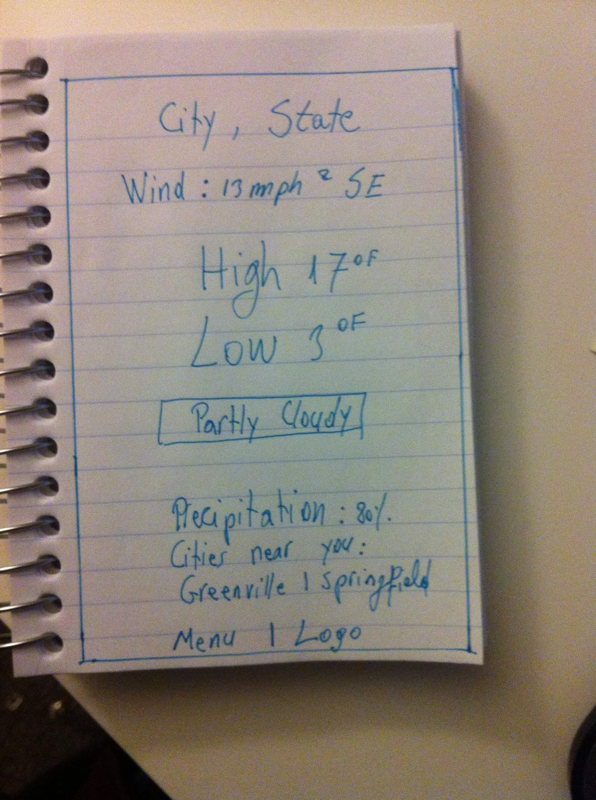
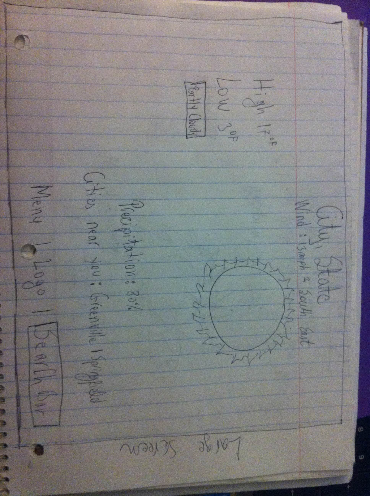

Humidity
Cities near you:
Greenville | Springfield | Franklin
Menu | Logo
Hourly Weather
01.00AM - 67°F | 02.00AM - 69 °F | 03.00AM - 69°F | 04.00AM - 69 °F
05.00AM - 70°F | 06.00AM - 69 °F | 07.00AM - 72°F | 08.00AM - 74 °F
09.00AM - 77°F | 10.00AM - 79 °F | 11.00AM - 81°F | 12.00PM - 83 °F
01.00PM - 86°F | 02.00PM - 88 °F | 03.00PM - 90°F | 04.00PM - 90 °F
05.00PM - 85°F | 06.00PM - 83 °F | 07.00PM - 79°F | 08.00PM - 74 °F
09.00PM - 70°F | 10.00PM - 68 °F | 11.00PM - 66°F | 12.00AM - 65 °F
Mobile Screen Design

Medium Screen Design

Large Screen Design
